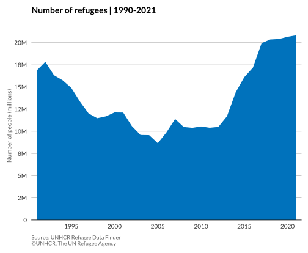

Area chart with Python
An area chart, like a line chart, displays the evolution of numeric variables over a continuous period of time. However, in an area chart, the area between the line and x-axis is filled with colour or texture.
More about: Area chart
Basic area chart
# import libraries
import numpy as np
import matplotlib.pyplot as plt
import pandas as pd
plt.style.use(['unhcrpyplotstyle','area'])
#load and reshape the data
df = pd.read_csv('https://raw.githubusercontent.com/GDS-ODSSS/unhcr-dataviz-platform/master/data/change_over_time/area.csv')
df = df.pivot(index='year', columns='population_type', values='population_number')
df = df.reset_index()
#compute data for plotting
x = df['year']
y = df['Refugees']
#plot the chart
fig, ax = plt.subplots()
ax.stackplot(x, y)
#set chart title
ax.set_title('Number of refugees | 1990-2021')
#set y-axis label
ax.set_ylabel('Number of people (millions)')
#format x-axis tick labels
def number_formatter(x, pos):
if x >= 1e6:
s = '{:1.0f}M'.format(x*1e-6)
elif x < 1e6 and x > 0:
s = '{:1.0f}K'.format(x*1e-3)
else:
s = '{:1.0f}'.format(x)
return s
ax.yaxis.set_major_formatter(number_formatter)
#set chart source and copyright
plt.annotate('Source: UNHCR Refugee Data Finder', (0,0), (0, -25), xycoords='axes fraction', textcoords='offset points', va='top', color = '#666666', fontsize=9)
plt.annotate('©UNHCR, The UN Refugee Agency', (0,0), (0, -35), xycoords='axes fraction', textcoords='offset points', va='top', color = '#666666', fontsize=9)
#adjust chart margin and layout
fig.tight_layout()
#show chart
plt.show()